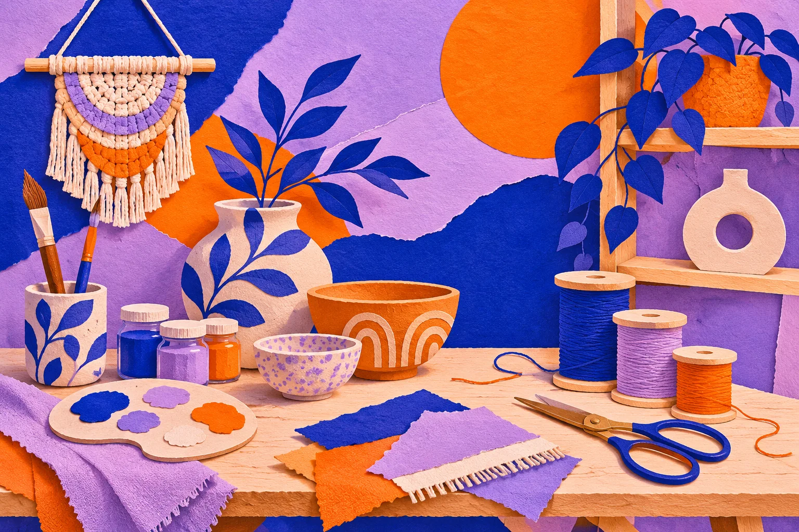
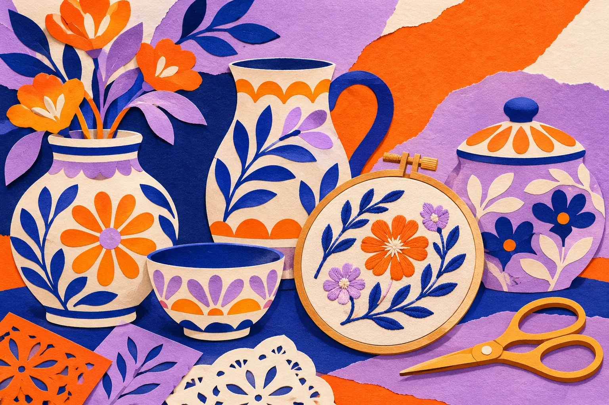

手作灵感簿
分类导航
成人百科 ↗
手工与创意 · 精选网址
把灵感 做成喜欢的样子
陶艺、编织、绘画和纸艺，把有趣的点子收进工作台。

成人百科
成人资讯入口 · 仅限年满 18 周岁者访问
↗
分类导航
手工教程
Instructables
↗
Craftsy
↗
The Spruce Crafts
↗
哔哩哔哩
↗
艺术与设计
Behance
↗
Dribbble
↗
Designboom
↗
Colossal
↗
视觉素材
Unsplash
↗
Pexels
↗
Canva
↗
Pinterest
↗
灵感分享
小红书
↗
豆瓣
↗
知乎
↗
站酷
↗

把每一个点子变成作品
陶艺、编织、绘画和纸艺，把有趣的点子收进工作台。